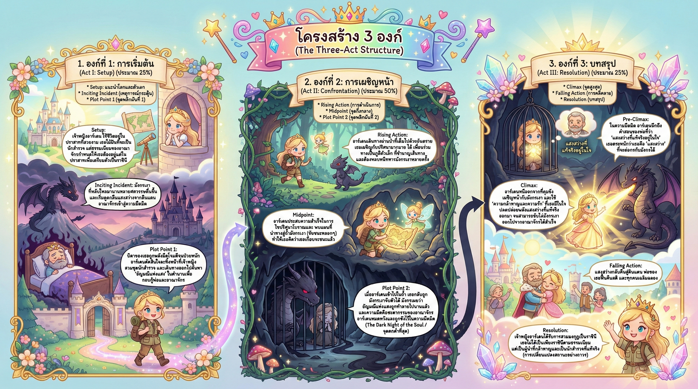
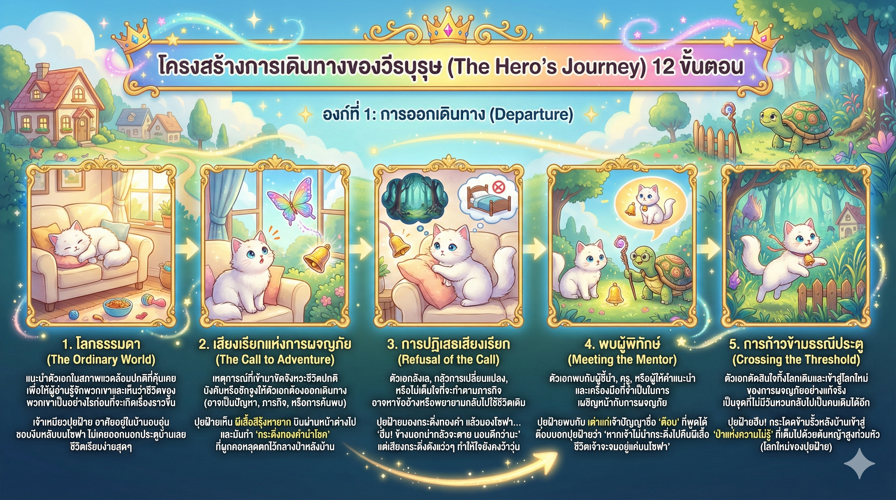
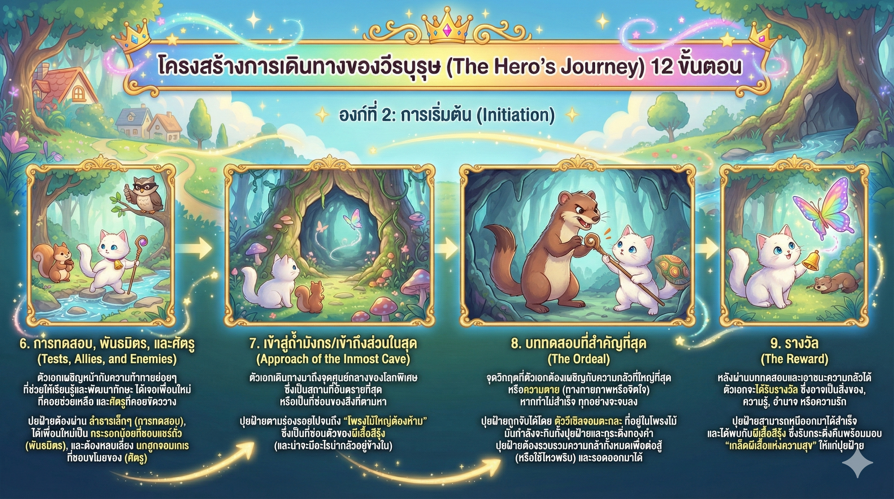
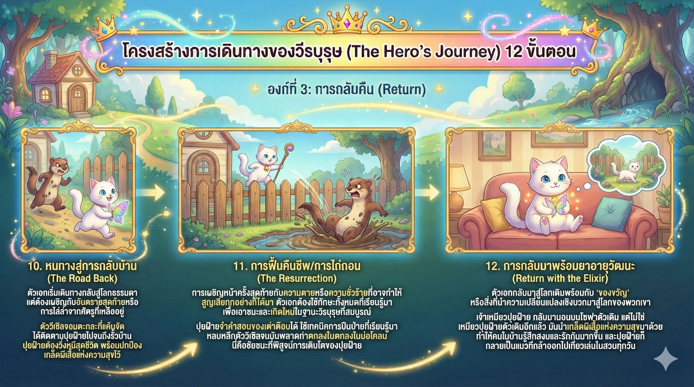
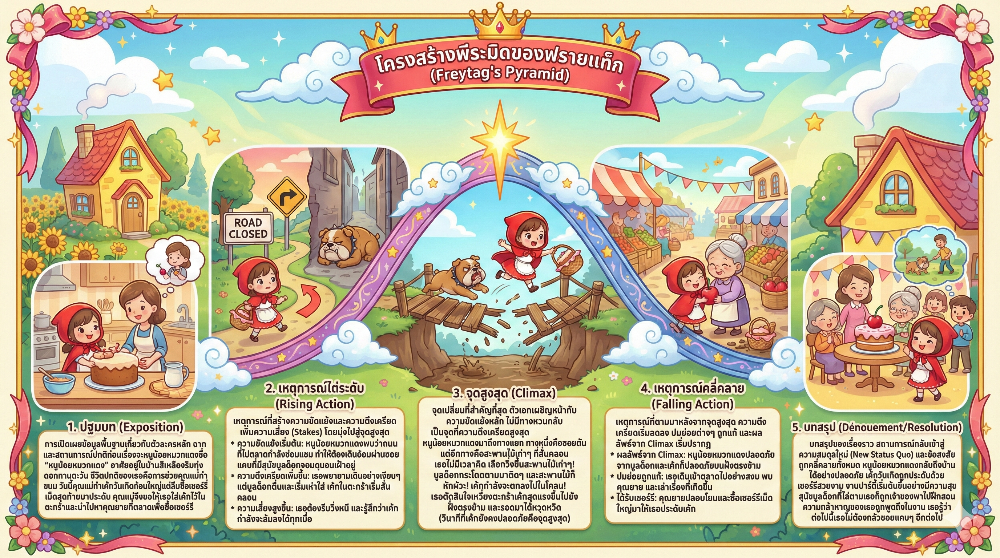
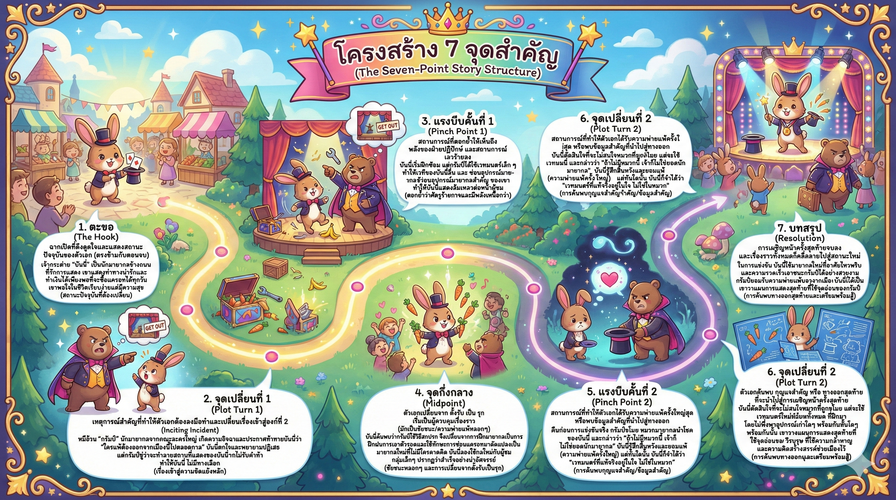

1. โครงสร้าง 3 องค์ (The Three-Act Structure)
โครงสร้างพื้นฐานที่สุดของการเล่าเรื่อง แบ่งเรื่องราวออกเป็น 3 ส่วนชัดเจน เหมือนการเริ่มต้น เดินทาง และบทสรุป

Act I: การเริ่มต้น (Setup)
แนะนำตัวละครและโลกปกติ จนเกิดเหตุการณ์พลิกผัน (Inciting Incident) ที่ทำให้ต้องออกเดินทาง
Act II: การเผชิญหน้า (Confrontation)
ช่วงที่ยาวที่สุด ตัวละครต้องเจออุปสรรค เรียนรู้ และเปลี่ยนแปลง ผ่านจุดกึ่งกลางเรื่อง (Midpoint)
Act III: บทสรุป (Resolution)
การต่อสู้ครั้งสุดท้าย (Climax) และผลลัพธ์ที่ตามมา จบลงด้วยสถานะใหม่ของตัวละคร
2. การเดินทางของวีรบุรุษ (The Hero's Journey)
มหากาพย์การผจญภัย 12 ขั้นตอน เหมาะสำหรับเรื่องราวแฟนตาซี หรือการเติบโตของตัวละคร

จากโลกเดิมสู่โลกใหม่
เริ่มจากโลกธรรมดา (Ordinary World) ได้รับเสียงเรียก พบผู้นำทาง และตัดสินใจก้าวข้ามธรณีประตูสู่การผจญภัย

บททดสอบและศัตรู
พบพันธมิตรและศัตรู เข้าสู่ถ้ำเสือ (Inmost Cave) และเผชิญกับบททดสอบครั้งสำคัญที่สุด (The Ordeal) ที่เสี่ยงเป็นเสี่ยงตาย

ชัยชนะและการเกิดใหม่
ได้รับรางวัล (Reward) เดินทางกลับ เผชิญหน้าครั้งสุดท้าย (Resurrection) และนำยาวิเศษกลับคืนสู่โลกเดิม (Return with Elixir)
3. พีระมิดของฟรายทัก (Freytag's Pyramid)

เน้นความดราม่า 5 ขั้นตอน
- 1 Exposition: ปูพื้นเรื่อง
- 2 Rising Action: ไต่ระดับความเครียด
- 3 Climax: จุดพีคที่สุด
- 4 Falling Action: คลี่คลายปม
- 5 Resolution: บทสรุปจบ
4. โครงสร้าง 7 จุดสำคัญ (7-Point Story Structure)
เทคนิคการวางพล็อตโดย "คิดจากตอนจบ" แล้วย้อนกลับมาหาจุดเริ่มต้น

5. วงกลมเรื่องราว (Story Circle)
แนวคิดวงกลม 8 ขั้นตอน
เน้นการเปลี่ยนแปลงภายในจิตใจ แบ่งเป็นครึ่งบน (โลกปกติ/Order) และครึ่งล่าง (โลกพิเศษ/Chaos)